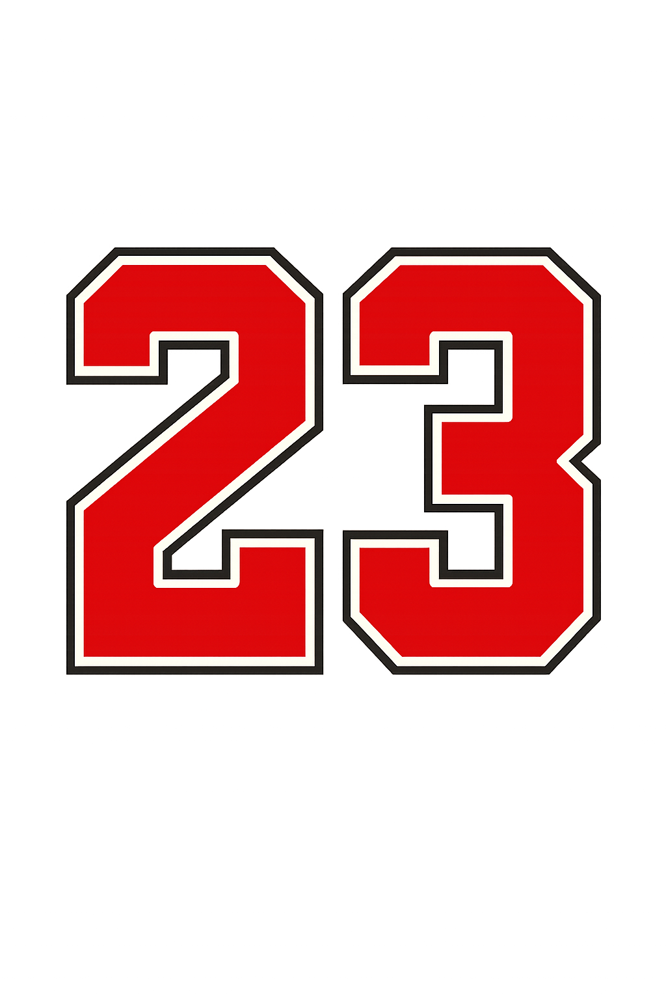
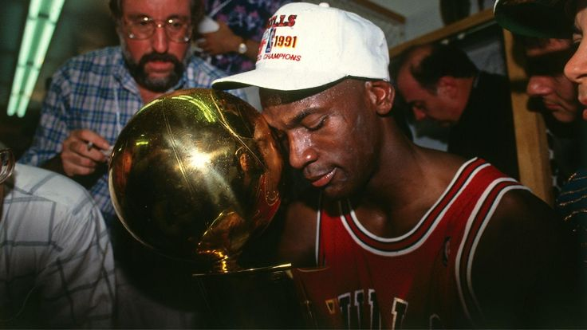

Michael Jordan
O melhor jogador da história da NBA
Seis títulos. Uma dinastia. Um legado eterno.
Explorar o legado
6× Campeão
5× MVP
14× All-Star
Michael Jordan
O melhor jogador da história da NBA
Seis títulos. Uma dinastia. Um legado eterno.
Explorar o legado
Michael Jordan não foi apenas um atleta. Ele foi um divisor de águas. Em uma era onde o basquete ainda buscava identidade global, Jordan transformou o jogo em espetáculo, mentalidade e legado.
Sua obsessão pela vitória, sua disciplina extrema e sua frieza nos momentos decisivos criaram um novo padrão de grandeza. Não se tratava apenas de talento — mas de vontade.
“O talento vence jogos, mas o trabalho em equipe vence campeonatos.”
SEIS FINAIS. SEIS VITÓRIAS. ZERO DERROTAS.

Depois de anos sendo parado pelos Pistons, Michael Jordan finalmente conquistou seu primeiro título da NBA. Não foi apenas uma vitória — foi o nascimento de uma dinastia.